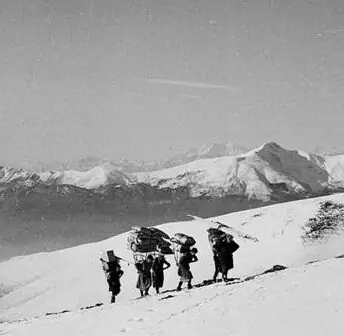

Il sentiero delle portatrici di sci
Fa rivivere il ricordo delle donne «sherpa» che dal sagrato della chiesa di San Barnaba portavano fino alla capanna gli sci dei luganesi benestanti, arrivati in autopostale a Bidogno.
- Lunghezza
- 4 km
- Dislivello
- +800 m
- Tempo
- 2 h
- Difficoltà
- T2